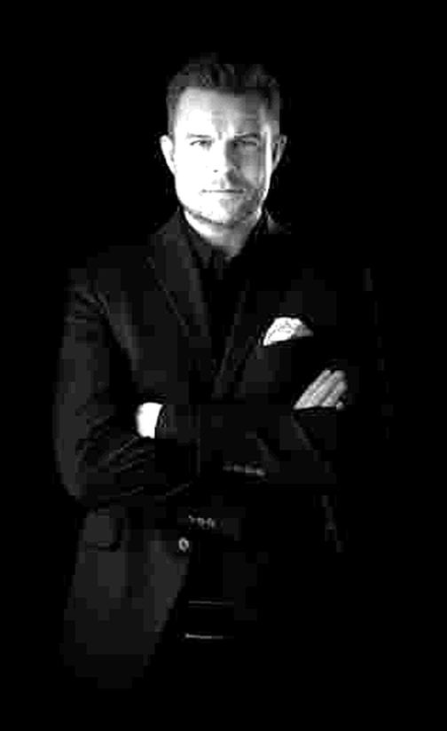

AFTERMATH is led by Adam Bugaj, an executive who has run technology organizations rather than advised them from the outside. His path runs from Program Management and Delivery through Engineering, Product and Business Development to Managing Director, COO, co-CEO and Board Member.
That background shapes how AFTERMATH works: hands-on, accountable for outcomes, and focused on making technology more human.
- 2025 — nowWEBCON S.A.Board Member & COO · business process automation
- 2023 — 2025InfoGlobalTech Inc.Board Member & COO, European Zone
- 2014 — 2023Ailleron S.A.Board Member · co-CEO · COO · EVP · Managing Director, FinTech
- 2012 — 2014Software Mind S.A.Head of Delivery & Engineering, FinTech (USA)
- 2006 — 2012Comarch S.A.Head of Delivery · Program Manager · PMO
MBA ITPMPPRINCE2Scrum / AgileITILCOBITTOGAFSingularity University · Cracow Chapter
How we work
Three principles we hold ourselves to
We exceed expectations through collaboration.
Every small action should improve the client's world. Even a well-written message can change how a project goes.
We build collaboration on trust.
We listen first, map needs to practical solutions and take full ownership of what is entrusted to us.
We work with respect for everyone.
Clear communication, professional execution, and the reminder that hard work needs proper rest.
NextNews →